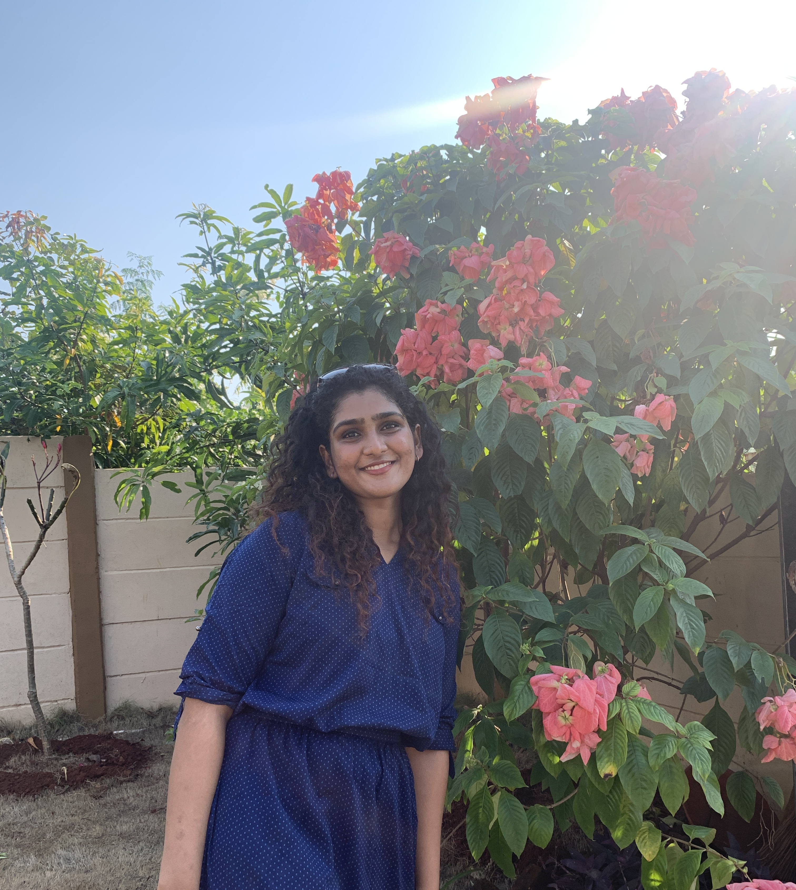

Hi, I am Angel Isaac
and I am a Programer by Profession
Who I am
Animation and Gaming Enthusiast
Smooth flowing movements in animation, and special effects that go with it can make or break my day.
Hi again, I'm Angel, a Graduate Student in the School of Computing at Clemson University. I'm also a parttime Graduate Research Assitant and am currently working on developing an app for the Enviornment and Forestry Department of the University.
Personally, I enjoy coding in C++ as I feel it’s more customizable and gives me better control. However, I have worked extensively with Python, C# and even Java.
To talk more about how I bring my passion and profession together; In my Graduate studies, I’ve had the chance to venture into animation and game development. I made a short animation film using C++ and SDL2 and have also developed a fighting-sidescroller-game of my own. I also successfully created a virtual replica of an educational-hex hardware object using Unity and C#. This Unity based hex object educates the masses on the issue of Female Feticide with the help of real-time movement and animation using user key presses and color changing features, all to represent its real-life hardware implementation. In the coming semesters I’ll also be working in Unity to implement Virtual Reality in gaming for which I’m excited.
Download ResumeMy Work
Below you will find a short video and the github links of the source code of some of my recent works
This implementation was mostly to figure out the features of SDL2. Here, an Octopus creature moves through a side-scrolling environment kicking balls on its path to finally get a coin at the end of the level.
This engine was implemented using SDL2 in C++.
side note: I designed and drew the Octopus player character, the collectibles and obstacles, and also the environment tileset
Karate Kid is a side-scroller fight game. The game progresses as the Main Player Character moves through the environment, defeating the Enemy Characters by combat. As the player progresses, one enemy at a time, the difficulty in defeating the enemy increases, and after few such enemies, at the end of the game the PC must confront the Main Boss enemy. To win the game, the player must successfully reach the end and defeat the main boss. The game must be completed within a specific time limit whilst keeping the PC’s health in check.
Git RepoEmpower is a harwared device that educates the masses about female fetecide rates. I used UNITY to build a virtual device that closely repereseted the features of the main hadware device. Using Unity I sucessfully built a "hex-token" that could be moved across the map using the arrow keys Then, the density of the color of the token represents the variation of ranges in some of the countries where fetecide is an issue. of fetecide across different counteries. Our main aim here was to show using UNITY what we would want to achieve on the hardware. We set the hexmap and named them with some of the countries which would help us show the variations.Here, we start off by removing the color of the token object and setting a glowing light around it to depict the aspiration that it "glows". As we move aross the map the intensity of the blue and green colors show the changes in fetecide rates, the darker the color the higher the rate.
Git Repo